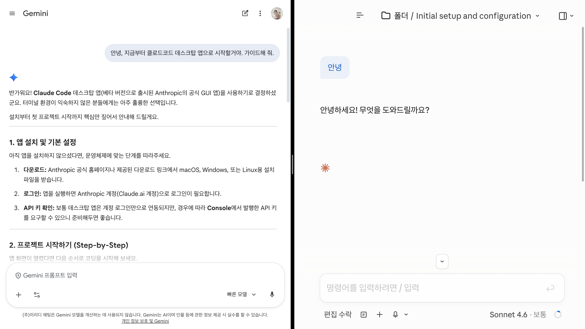

오늘은 Claude Code부터 같이 시작해봐요.
일하는 방식 자체를 바꿔보는 시간이에요.
한두 회사 얘기가 아니에요. 같이 일하는 동료들이 기대하는 기준 자체가 움직이고 있어요.
ChatGPT·Claude 등 생성형 AI 도구를 업무에 능숙하게 활용한 경험
AI 기반 디자인 워크플로우 활용 경험 (Figma AI, Midjourney 등)
AI 활용한 카피·콘텐츠 생산 효율화 경험 보유자
AI 활용 분석 자동화 경험 필수. 반복 쿼리·리포트를 LLM으로 자동화한 경험
단축키·메뉴 익히면 바로 결과물이 나와요.
일하는 방식은 그대로 둬도 돼요.
도구 사용법도 익혀야 하고, 일하는 방식 자체가 바뀌어야 해요.
그래서 초반 허들이 커요.
앞으로는 "어떻게"가 아니라
"왜, 언제, 뭘"에 집중하게 될 거예요.
프디인 제가 바이브코딩을 하더라도, 보안·디버깅·확장성 고려까지는 현실적으로 불가해요.
그렇기에 업무의 벽이 허물어지더라도 전문성은 더 중요해질거예요.
맥락 부여부터 운영까지,
AI가 어디에 붙어있는지,
판단이 언제 개입하는지 보세요.
아이디어 단계부터 Confluence 업로드, QA까지 AI가 끊기지 않고 연결돼요. 중간에 수동 작업이 없어요.
방향 잡기, 피드백, 최종 결정. 실행에 쓰던 시간이 판단으로 바뀌어요. 다음 슬라이드부터 하나씩 열게요.
예전엔 기획서 한 장 쓰는 데 몇 시간이었어요. 지금은 방향 잡기 30분, 초안 받고 다듬기 30분.
각 단계가 맥락을 이어받아요. 상위 기획 → 세부 설계 → 코드 → 문서로 자연스럽게 흘러가요.
히스토리·데이터·결정 배경을 한 번에. 오래 담당하며 생긴 선입견을 AI가 걷어줘요.
VOC·경쟁사·트렌드 수집은 AI 몫. 사람은 우선순위만 판단해요.
빈 문서 앞 막막한 시간이 사라져요. 베이스(Figma·레퍼런스·이미지)만 주면 Claude Code가 이어받아요.
AI가 보편적 추천을 먼저 던져 사고가 넓어져요. 프로덕트 맥락 판단은 사람 몫.
POC 화면을 프로덕트 수준으로. 레이아웃·여백·타이포·컬러 디테일까지 잡아요.
머릿속 움직임을 코드로 시각화. 말로 설명하기 어려운 인터랙션도 바로 보여줘요.
리뷰 피드백 → 최종 스펙·정책 문서로. 흩어진 결정·예외 케이스를 한 곳에 모아요.
자연어 한 줄이면 Confluence 페이지가 만들어져요. 에이전트 여러 개 동시에 돌려 QA 루프까지.
단순작업을 AI 규칙으로. 기준만 잡아주면 같은 품질로 반복 실행돼요.
VOC·경쟁사·CSV를 파이프라인으로. 한 번 만들면 다시는 손 안 대요.
오늘 처음 설치하는 사람을 위한 가이드

반복하다 보면 한 번에 쓰는 토큰이 늘어나요. 작업 길이·비용·속도가 동시에 좋아지는 4가지 액션
딱 한 번만 확인하고 시작하세요
나머지 50%는 반복과 응용
여기까지 하셨으면 누가 도와주지 않아도 이것저것 시도해보시면서 더 깊고, 넓게 쓰시게 될 거라고 생각해요.
반복을 줄이고, AI와 장기 협업하는 법
프로덕트 디자이너 · 개발팀·데이터팀과 협업
매주 작성하는 보고서 자동 생성
파일 검토 + 이슈 리스트 자동 작성
빌드 + 배포 + 슬랙 알림 한 번에
회의록 정리 + Confluence 업로드
특정 이벤트(저장, 작업 완료)에 코드가 자동 실행돼요
Claude가 파일을 바꾸기 직전에 자동으로 백업을 만들어요. 실수해도 원본이 보존돼요.
Claude가 코드를 작성하고 나면 자동으로 린트·테스트가 돌아가요. 사람이 직접 실행 안 해도 돼요.
Claude의 작업이 끝나면 자동으로 슬랙 알림을 보내요. 기다리다가 놓치는 일이 없어요.
→ 동시 실행으로 대기 시간 단축
→ 병렬 진행으로 대기 시간 제거
먼저 파악하게 해요.
"이 폴더 구조
파악해줘"
계획 먼저 받아요.
"실행 전에 어떻게
할지 보여줘"
확인 후 실행.
"이제 해줘"
바로 실행시키면 방향이 틀릴 때 되돌리기 어려움. Plan 단계에서 방향 수정이 훨씬 저렴해요.
Claude Code가 무언가 바꾸기 전에 커밋 → 실수해도 그 시점으로 돌아갈 수 있어요
이걸 다 쓰는 사람은 많지 않습니다 — 오늘 1개만 추가가 목표예요
도구가 아니라 사고체계
빈 문서 → 혼자 생각 →
30분 지나도 첫 줄 못 씀
Claude에게 먼저 초안 요청 →
10분 안에 80% → 내가 20% 다듬기
"나 지금 [주제] 기획서 써야 해.
배경은 [배경].
우선 목차부터 잡아줘"
Claude A가 초안 작성
Claude B가 비판적 리뷰
다른 세션, 다른 관점
피드백 반영 → 다시 1로
"이 기획서에서 빠진 게 뭔지,
논리 구멍은 어딘지,
반론 3가지 들어줘"
"이 결정에 반대하는 입장에서
가장 강한 반론 써줘"
같은 Claude한테 바로 물으면 동의해주려는 경향 있음
→ 새 세션에서 물어볼 것
Model Context Protocol — Claude에게 플러그인처럼 도구를 붙이는 방법
페이지 생성·수정·검색을 대화만으로 처리. 수동 복붙 없음.
채널·DM·스레드 작성. 알림 자동화, 리포트 발송 가능.
스크래핑·폼 자동화·화면 캡처. 반복 업무를 완전 자동화.
.claude/mcp.json 에
설정 추가 → Claude 재시작
* 아직 공식 MCP 생태계 확장 중. 필요한 것부터 하나씩
AI와의 대화는 사라지지 않게 저장해야 함
잘 된 프롬프트, 좋은 결과물 →
CLAUDE.md나 memory에 즉시 저장
이게 쌓이면 '나만의 AI 시스템'이 됨
잘 된 프롬프트는 반드시 파일로 남겨둬요
자주 쓰는 패턴은 /명령어로 만들어요
개인 자산을 팀 전체로 확장
새 프로젝트 받았는데 코드베이스·문서가 방대함
1~2주
온보딩
30분
핵심 파악
"이 폴더 전체 구조 파악해줘. 핵심 파일 5개 찾아줘"
"이 프로젝트가 뭘 하는지 3줄로 설명해줘"
"Git 로그 보고 최근 3개월 주요 변경사항 정리해줘"
"내가 [작업]을 하려면 어디서 시작해야 해?"
상황: 파일 100개, 함수 300개. 네이밍 전체를 바꿔야 함
영향받는 파일 전체 목록 뽑아줘
순서 계획 짜줘. 실행 전 보여줘
계획 검토 후 OK
단계별 실행 + 각 단계 후 테스트
변경 전후 동작 비교
혼자 기획
→ 혼자 쓰기
→ 혼자 검증
→ 혼자 반복
방향 판단(나)
+ 생성(AI)
+ 검증(AI)
+ 반복(자동)
속도가 빨라지는 게 아니에요.
할 수 있는 것의 경계가 달라져요.
직접 쓰면서 정리한 12가지, 4가지 카테고리
초기 1회 설정으로 이후 작업 속도가 달라지는 팁들이에요.
Claude Code를 처음 켜기 전에 이 두 가지를 먼저 세팅하면, 이후 모든 작업이 훨씬 빠르고 정확해져요.
프로젝트 개요, 주제별 참조 파일 경로, 라우팅 표. 이 세 가지만 있어도 Claude가 필요한 파일만 골라서 읽어요. 불필요한 읽기 = 토큰 낭비.
"Claude Code 잘 활용하는 방법 리서치해서 내 폴더 구조에 적용할 계획 세워" — 이 한 문장으로 시작하면 Claude가 구조를 제안해줘요.
메모리 파일은 방치하면 비대해지고, 커질수록 매 요청마다 토큰을 잡아먹으니 주기적으로 압축해야 해요.
"메모리 파일 정리해줘. 50줄 넘으면 압축하고 오래된 건 archive로." — 이 한 줄로 Claude가 처리해요.
POC 먼저, 기획서는 나중에. 실전 흐름이에요.
기획서를 먼저 쓰면 글만 보고 판단하게 돼요. POC를 먼저 만들면 사용성 검증이 자연스럽게 따라와요.
POC를 만들면서 "이 흐름이 어색하네"가 실제 화면에서 바로 보여요. 기획서 글자만 읽을 땐 못 잡는 것들이에요.
POC → 흐름 검증 → 기획서 역으로 작성. 검증된 내용이라 기획서도 훨씬 탄탄해져요.
팀 전달·UT·구현 가능성 검증을 한 번에. "Claude Code로 된다 = 실제 개발도 가능"
원하는 인터랙션 직접 만들고 → 코드에서 값 추출 → 바로 전달.
자주 쓰는 UI 패턴을 미리 저장해두면, 새 POC를 시작할 때마다 시간을 크게 아낄 수 있어요.
Chat 화면, 리스트 화면 등 자주 쓰는 UI 패턴을 HTML 파일로 만들어둬요. 새 POC는 파일 복사 → 기능만 추가. 처음부터 다시 만드는 시간이 없어요.
베이스 파일은 반드시 GitHub에 저장해두세요. 로컬만 있으면 Claude Code가 폴더 정리할 때 사라질 수 있어요.
"이거 실제 API 연결된 거죠?"의 문제가 아니에요. 더미데이터를 실제 데이터로 착각해서 그대로 구현해버리는 게 문제예요.
실제 서비스랑 구분을 못 하는 게 문제가 아니에요. 개발자의 착각이 문제예요. POC에 넣은 더미 값·샘플 텍스트를 실제 스펙으로 착각하고 그대로 구현해버리는 거예요.
POC 공유 전 반드시 "이 값·텍스트는 더미예요"를 화면과 문서 양쪽에 명시하세요. 화면 상단 "POC — 더미데이터" 배지, 더미인 필드엔 별도 표식을 달아두세요.
AI가 잘하는 영역과 못하는 영역을 가르는 법이에요.
Figma Make가 어렵거나 시간이 없을 때, SVG 첨부만으로도 Claude가 화면 구조를 정확하게 파악해요.
레이어 우클릭 → Copy as SVG → Claude에 붙여넣기. 30초면 돼요.
로딩, 에러, 빈 화면 — 이 상태들을 POC 안에서 바로 보여줄 수 있으면, 개발자와의 리뷰가 완전히 달라져요.
"이 상태에서는 이렇게 돼요"를 클릭 한 번으로 보여줄 수 있어요. 말로 설명하는 것보다 10배 빠르게 이해시켜요.
AI는 기능을 만들 수 있지만, "AI스러운 디자인"을 해결하기 위해서는 디자인 감각 있는 사람이 목줄을 잡아줘야 해요.
자연스러운 시각 보정, 호흡감, 여백의 감각이 없어요. 기능은 만들어도 "왜인지 어색함"은 못 잡아요. 그게 디자이너의 역할이에요.
토큰·시간을 절약하는 실전 노하우예요.
수정사항을 하나씩 요청하면 비효율적이고, 한꺼번에 다 던지면 누락이 생겨요.
요청을 하나씩 던지면, 코드를 그때마다 다시 읽어요. 토큰도 낭비고, 시간도 낭비예요.
10개 주고 "3단계 계획 세워서 처리해줘"라고 하면 코드 1번 읽고 3/3/4 단계로 나눠서 처리해요. 누락 없이 효율적이에요.
Claude Code와 Gemini를 상황에 맞게 나눠 쓰면, 비용을 줄이면서도 품질은 유지할 수 있어요.
전체 맥락 파악, 구조 변경, 리팩토링에 강해요.
코드를 붙여넣고 핀포인트로 고쳐요. Claude 토큰 절약 + 더 빠른 수정.
Gemini에 문제를 주고 Claude Code용 프롬프트를 만들게 해요. GitHub를 AI Studio에 연결해두면 이어서 작업할 수 있어요.
POC 코드를 로컬에만 두면 언제든 사라질 수 있어요.
Claude Code가 폴더 정리할 때 삭제될 수 있어요. 며칠 걸쳐 만든 POC가 사라지는 걸 직접 경험했어요.
POC 완성 → GitHub 푸시 → Vercel 자동 배포 → 링크 공유. 초기 설정도 Claude Code에 "설정해줘" 하면 알아서 다 해줘요.
만들고 끝이 아니라, 에이전트 여러 개를 돌려 서로 검토하게 하면 품질이 다른 수준으로 올라가요.
도구가 바뀐 게 아니에요.
같은 판단으로 낼 수 있는 결과가 달라진 거예요.
막히는 것, 새로 발견한 것, 좋았던 프롬프트 — 혼자보다 같이 쓰면 훨씬 빨라요.